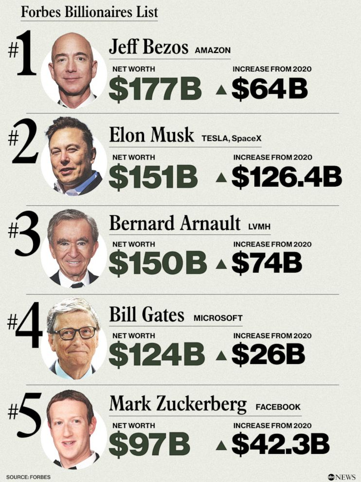
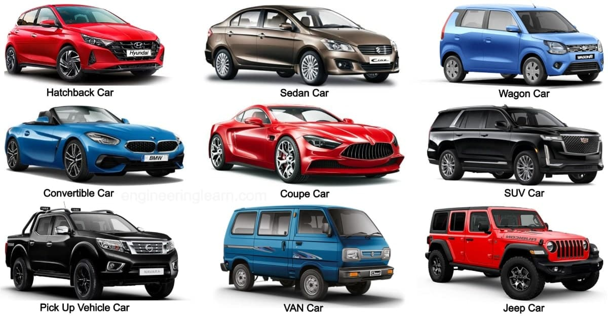

Cristiano Ronaldo, born on February 5, 1985, in Funchal, Madeira, Portugal, is a professional footballer renowned for his prolific goal-scoring and athletic prowess. Over his illustrious career, he has played for top clubs including Sporting CP, Manchester United, Real Madrid, Juventus, and currently, Al Nassr in Saudi Arabia. Career Achievements: Ballon d'Or Awards: Ronaldo has won the prestigious Ballon d'Or five times (2008, 2013, 2014, 2016, 2017), the most for any European player. UEFA Champions League: He holds the record for the most goals scored in the UEFA Champions League, with 140 goals. International Records: Ronaldo is the top scorer in international football, with 135 goals in 217 appearances for the Portugal national team. Club Trophies: Throughout his career, he has amassed 33 senior trophies, including league titles in England, Spain, Italy, and continental titles.
As of February 25, 2025, Elon Musk is recognized as the world's wealthiest individual, with an estimated net worth of $343 billion, according to the Bloomberg Billionaires Index. WIKIPEDIA Elon Musk Elon Musk is a prominent entrepreneur and business magnate known for his leadership roles in several influential companies: Tesla, Inc.: As CEO and product architect, Musk has been instrumental in advancing electric vehicle technology and sustainable energy SpaceX: Serving as founder, CEO, and chief engineer, he has led initiatives to revolutionize space exploration and transportation.  X Corp. (formerly Twitter): Musk owns and serves as executive chairman of X Corp., overseeing the platform's strategic direction. Neuralink: Co-founded by Musk, Neuralink focuses on developing implantable brain–machine interfaces.
Understanding the various car body styles can help you choose a vehicle that best fits your needs and preferences. Here's an overview of some common car types: 1. Sedan A sedan is a passenger car with a three-box configuration, typically featuring four doors and a separate trunk. It's designed to comfortably seat four or more passengers. 2. Hatchback Hatchbacks are characterized by a rear door that swings upward, providing access to the cargo area. They often have a two-box design and can come with either two or four doors. 3. Coupe Traditionally, a coupe is a two-door car with a fixed roof and a sporty appearance. However, modern interpretations may include four-door vehicles with a sloping roofline. WIKIPEDIA 4. Convertible Convertibles, also known as cabriolets, have a retractable roof, allowing drivers to enjoy open-air driving. They can be either soft-top or hard-top. 5. SUV (Sport Utility Vehicle) SUVs are larger vehicles designed for both on-road and off-road use. They typically offer higher ground clearance and can accommodate more passengers and cargo. 6. Crossover Crossovers combine features of SUVs and passenger cars, offering a car-like ride with the utility of an SUV. They are usually built on a unibody frame. 7. Pickup Truck Pickup trucks have an enclosed cabin and an open cargo area with low sides and a tailgate. They are popular for their utility and towing capabilities. 8. Minivan Designed primarily for passenger comfort, minivans offer spacious interiors with three rows of seating, making them ideal for larger families.